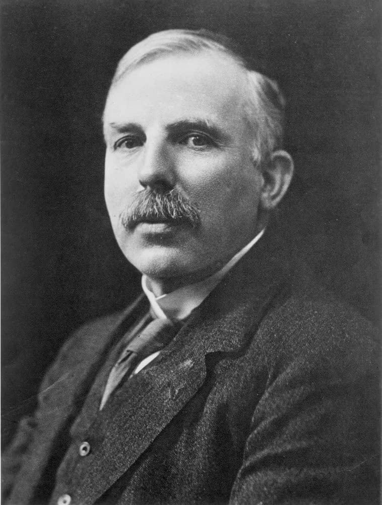
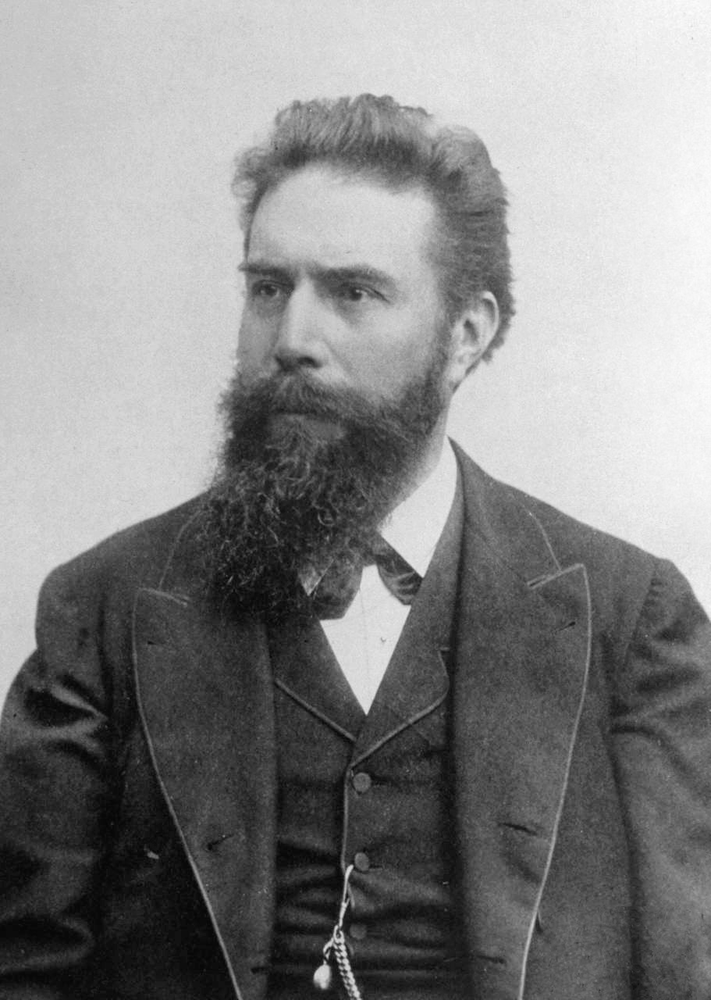

Mercury Archive
Significant People
Pierre and Marie Curie were awarded the Nobel Prize in Physics in 1903 for their work on radioactivity.
Marie Curie became the first woman to be awarded the nobel prize and the first person to obtain two
nobel prizes when she won the prize for the discovery of Polonium and Radium in 1911.
Though it was Henri Becquerel that discovered radioactivity, it was Marie Curie who coined the term.
Using a device invented by her husband and his brother that measured extremely low electrical
currents, Curie was able to note that uranium electrified the air around it. Further investigation
showed that the activity of uranium compounds depended upon the amount of uranium present and that
radioactivity was not a result of the interactions between molecules, but rather came from the atom
itself. Using Pitchblende and chalcolite Curie found that Thorium was radioactive as well. She later
discovered two new radioactive elements: Radium and Polonium which took her several years since these
elements are difficult to extract and extremely rare. Unfortunately, the Curies died young. Pierre
Curie was killed in a street accident and Marie died of aplastic anemia, almost certainly a result
of radiation exposure.

Ernest Rutherford is considered the father of nuclear physics. With his gold foil experiment he was able
to unlock the mysteries of the atomic structure. He received the noble prize in chemistry in 1908. In 1909 at
the University of Manchester, Rutherford was bombarding a piece of gold foil with Alpha particles. Rutherford
noted that although most of the particles went straight through the foil, one in every eight thousand was
deflected back. "It was as if you fired a fifteen inch naval shell at a piece of tissue paper and the shell
came right back and hit you," Rutherford said. He concluded that though an atom consists of mostly empty space,
most of its mass is concentrated in a very small positively charged region known as the nucleus, while electrons
buzz around on the outside.
Rutherford was also able to observe that radioactive elements underwent a process of decay over time which varied
from element to element. In 1919, Rutherford used alpha particles to transmutate one element (Oxygen) into another
element (Nitrogen). Papers at the timed called it "splitting the atom."
Antoine Henri Becquerel received the Nobel Prize in physics for being the first to discover radioactivity as
a phenomenon separate from that of x-rays and document the differences between the two.
Henri Becquerel learned of Roentgen's discovery of x-rays through the fluorescence that some materials produce. Using
a method similar to that of Roentgen, Becquerel surrounded several photographic plates with black paper and florescent
salts. With the intention of further advancing the study of x-rays, Becquerel intended to place the concealed
photographic paper in the sunlight and observe what transpired. Unfortunately, he had to delay his experiment because
the skies over Paris were overcast. He placed the wrapped plates into a dark desk drawer. After a few days Becquerel
returned to his experiment unwrapping the photographic paper and developing it, expecting only a light imprint from the
salts. Instead, the salts left very distinct outlines in the photographic paper suggesting that the salts, regardless
of lacking an energy source, continually fluoresced. What Becquerel had discovered was radioactivity.

Wilhelm Conrad Roentgen received the first Noble Prize in physics for his discovery of x-rays in 1901. On November 8, 1895, at the University of Wurzburg, Roentgen was working in the lab when he noticed a strange fluorescence coming from a nearby table. Upon further observation he found that it originated from a partially evacuated Hittof-Crookes tube, covered in opaque black paper which he was using to study cathode rays. He concluded that the fluorescence, which penetrated the opaque black paper, must have been caused by rays. This phenomenon was later coined x-rays and though the phenomenon of x-rays is not the same as radioactivity, Roentgen opened the door for radioactive discovery. |